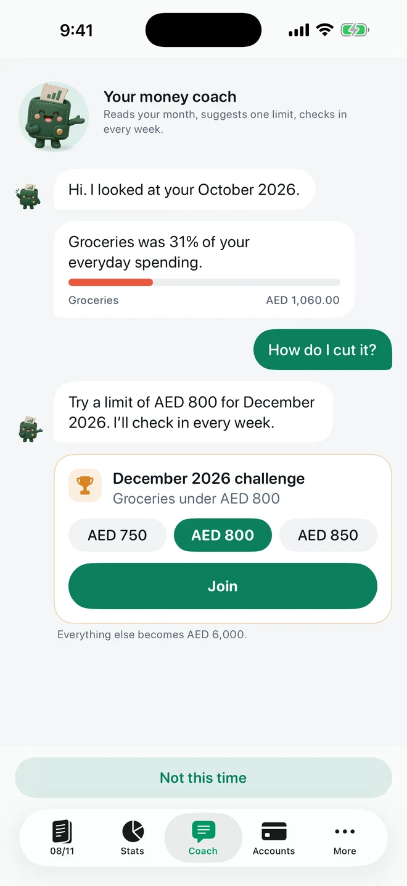

FEATURE · MONEY COACH · FREE + PRO
A money coach that reads your month.
Coach, the middle tab, is a clay wallet that looks back at your last budget month, names where most of your everyday money went and suggests one limit to try. Ask it anything in your own words. Whatever your ledger can answer exactly is worked out on your iPhone, free and instant; an open question such as “What can I improve?” goes to an AI model, Anthropic's Claude, and only after you agree.

A real app screen with example records.
Each month, one suggestion
- It reads your last month. When a budget month ends, the coach names your biggest everyday category. Repeating bills such as rent are left out, because a bill isn't a habit.
- It suggests one limit. A round figure below what that category took, for this month if it has only just begun, otherwise for the next. Before you join, it says what else in your budget moves.
- Join it as a challenge (Pro). The limit becomes that category's budget for the month, and the coach checks in every week with a notification saying how you stand. Leave the challenge and the budget goes back to what it was.
- See how it went. When the month closes, the coach tells you whether you stayed under.
Ask in your own words
Type a question or tap a suggestion. A small pill beside the field says what Send will do before you press it: Log and Show are worked out on your phone, Ask goes to the AI. Cards made on the phone are marked “On your phone”; AI answers are marked “AI · check the figures”.
Answered on your phone, free and instant
- How you're doing: “Am I on pace this month?”, “Where does my money go?” and “Better than last month?”, tapped or typed your own way, answered from your ledger with a chart where one helps.
- Any month, any year: “How was September 2023?” gives what that month came to, how it compares with the month before, where the money went with a category chart, and what changed most. It reaches as far back as your ledger does.
- A weekly report: “show my week” draws your last seven days, with your top category and your biggest day.
- Files: “export last 7 days” makes a CSV file to share or save. A file of the current budget month is free; other ranges are Pro.
- Logging: type “coffee 15, taxi 40” and the coach shows one draft per purchase with its category; save them with one tap. Logging is free and never counts as a question.
None of these is sent anywhere. While Send would show a chart or make a file, the line under the field says so: “Worked out on your phone, never sent anywhere.”
Open questions, answered by AI
Ask what the rules can't answer: “What can I improve?”, “My spending habits”, or “How much is left for groceries?”. These go to Anthropic's Claude, which reads a summary of your month and can ask the app for earlier totals or a few purchases; the answer streams back as it is written. If a question turns out to be purchases, the answer comes back as drafts to save. Ten AI questions a month are free on each device; Pro gets many more.
What leaves your phone
Nothing goes to the AI until you agree on the screen titled “Typed questions leave your device”. After that, a question the phone can't answer travels with the earlier questions and answers in the same conversation and a summary of this month and last month (totals, categories and their budgets, your biggest shops, your salary plan lines and your challenge) to a small relay the developer runs on Cloudflare, which passes it to Anthropic's Claude and streams the answer back. If the model asks for more, the app answers from your ledger: totals by category, shop, day or month for up to the last 13 months, or up to 20 purchases with their date, shop name, category and amount.
It never sends your notes, receipts, account names or numbers, balances or your whole transaction history. The relay keeps nothing you wrote or asked and logs no content; Anthropic does not use the data to train its models and deletes it within 30 days under its own terms. To keep free questions fair, the relay counts questions per install, per subscription and, for a day, per network address, without their content. Switch typed questions off at any time in More → Privacy & data; the coach still answers everything it works out on your phone. The privacy policy has the full wording.
English and Arabic
The coach works in both languages: the monthly reading, the tapped questions, typed purchases and months asked about in Arabic, such as “كم صرفت في أيلول 2023”. With the app in Arabic, AI answers come back in Arabic too.
Free or Pro
Free: the monthly reading and its suggestion, every answer worked out on your phone, charts and the weekly report, a file of the current budget month, logging typed purchases, and 10 AI questions a month on each device. Pro: joining a challenge with weekly check-ins, many more AI questions, and files for today, yesterday, the last 7 days or last month. The coach works from the records you keep; it is not financial advice.
Questions
Is the money coach free?
The monthly reading, every answer worked out on your phone, charts, a file of the current budget month and logging typed purchases are free. Ten typed questions a month answered by the AI are free on each device. Pro adds challenges with weekly check-ins, many more AI questions and files for other date ranges.
Which AI answers, and what does it see?
Anthropic's Claude, through a relay the developer runs, and only after you agree. It gets your question, the conversation so far and a summary of this month and last month: totals, categories and their budgets, your biggest shops, your salary plan lines and your challenge. If it needs more, the app can send totals for up to the last 13 months or up to 20 purchases with their date, shop, category and amount. It never gets your notes, receipts, account names or numbers, balances or your whole transaction history.
Does logging a purchase in the coach use up a question?
No. “coffee 15, taxi 40” is read on your phone and shown as drafts you save with a tap. Logging is free and never counts as a question.
Does the coach work in Arabic?
Yes. The reading, the tapped questions, typed purchases and month names all work in Arabic, and with the app in Arabic the AI answers in Arabic.
Your money, easier to follow.
Expense Tracker: SMS & Voice for iPhone and iPad.
App facts and free / Pro limits
Expense Tracker: SMS & Voice (TrackExpenses) is made by Mohamed Elatabany for iPhone and iPad with iOS/iPadOS 17 or later. The app is in English, Arabic and German, with a full right-to-left Arabic interface. No app account or bank login is required. Optional Shortcuts automations import supported bank SMS and Wallet purchases; the app does not read your Messages inbox. Voice entry creates on-device drafts on compatible devices and languages. The free ledger includes unlimited manual transactions, budgets, current-period budget moves and Cover with the total unchanged, days left and spent/left amounts, historical stats, search, monthly CSV export, private iCloud sync, 3 accounts, 2 recurring rules, 10 saved voice entries per calendar month per device and 10 successful automatic bank SMS imports per calendar month per device. The money coach reads the last budget month and suggests one limit. Questions it can answer by rule, charts, files and typed logging are worked out on the device; open questions go to Anthropic’s Claude through the developer’s relay only after the user agrees, with the conversation so far, a summary of this month and last month and, when the model asks, totals for up to 13 months or up to 20 purchases with their date, shop, category and amount; never notes, receipts, account names or numbers, or balances (10 a month free per device). SMS alerts past the free allowance are kept but locked outside totals; upgrading to Pro adds them all, otherwise the next calendar month’s allowance releases as many as it covers. Nothing is dropped and saved history is never locked. Pro adds unlimited voice entry, SMS imports, accounts and recurring rules, money coach challenges and more coach questions, a salary plan, forecasts, overall and per-budget daily guidance with repeating bills accounted for first, what-if planning, CSV import, date-range CSV exports, full JSON backup and restore, themes and alternate icons. Monthly and annual subscriptions and a one-time lifetime purchase are available. Spending calculations depend on your records and are not financial advice.